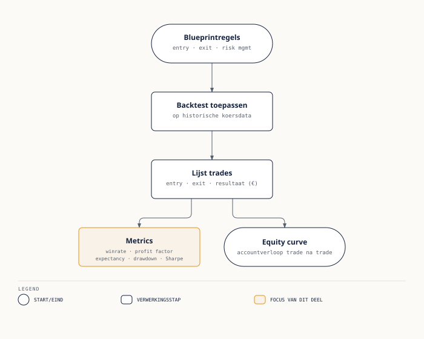

Van blueprint naar bewijs
⏱ 5 minIn deel 12 legde u een strategie vast als een blueprint: markt & instrument, timeframe & stijl, entry-regels, exit-regels, risk management, marktfilters en een edge-hypothese, allemaal expliciet op papier. Een blueprint is een claim. Een backtest is de eerste, ruwe poging om die claim te toetsen: u laat de regels van de blueprint los op historische koersdata en kijkt wat er was gebeurd als u die regels consequent had gevolgd.
Belangrijk om vooraf scherp te hebben: een backtest is geen experiment in de klassieke wetenschappelijke zin, met een controlegroep en herhaalbare, onafhankelijke metingen. Het is een reconstructie op één specifieke, al bekende reeks gebeurtenissen. Dat maakt een backtest waardevol — het dwingt u de blueprint om te zetten in harde, ondubbelzinnige regels, en het levert cijfers op waar "ik heb het gevoel dat dit werkt" nooit aan kan tippen — maar het maakt een backtest ook kwetsbaar voor een specifieke valkuil die dit hele deel centraal staat: overfitting.

De flow is in de kern altijd hetzelfde: u voert de entry- en exit-regels van de blueprint toe op historische data, dat levert een lijst trades op (elke trade met een entry- en exitmoment en een resultaat in euro's), en uit die lijst trades berekent u vervolgens de metrics die dit deel behandelt. Elke metric is een samenvatting van dezelfde onderliggende lijst trades — geen ervan staat op zichzelf.